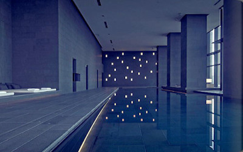

Park Hyatt SydneyLocated in Australia. Across Sydney Harbour from the Sydney Opera House, this posh hotel in The Rocks neighbourhood is 8 minutes' walk from the Museum of Contemporary Art Australia and 4 km from Darling Harbour. |
Royal MalewaneLocated in South Africa. This luxury all-inclusive safari lodge is located in Thornybush Private Game Reserve on the western border of Greater Kruger National Park. |

AmanLocated in Tokyo, Japan. Set in the top 6 floors of a sleek high-rise, this sophisticated modern hotel is 3 km from the landmark Tsukiji fish market, and 1.8 km from Tokyo Imperial Palace. |
Soneva JaniThis luxury resort on a private lagoon is accessible by seaplane from Velana International Airport 166 km away, or via speedboat from Kunfunadhoo Island. |